SHOW WINDOW ART RENTAL
通りを歩く人の足を、
止める鉄。
百貨店・ブランド店のショーウィンドウに、鉄の作家・池内卓也の彫刻を。シーズンの展示に合わせてレンタルし、会期が終われば次の作品へ。ブランドのためのオーダー制作も承ります。
SHOW WINDOW ART RENTAL
百貨店・ブランド店のショーウィンドウに、鉄の作家・池内卓也の彫刻を。シーズンの展示に合わせてレンタルし、会期が終われば次の作品へ。ブランドのためのオーダー制作も承ります。
ショーウィンドウは、店に入る前のお客様に、ブランドの世界観を伝える舞台です。量産の什器ではなく、作家が手で溶接した鉄の彫刻を置くことで、通りの景色の中で目を引くウィンドウになります。
高知の工房で、溶接職人として三十余年の作家が一点ずつ仕上げた作品です。「誰が、どうつくったか」を語れるウィンドウになります。
鉄の錆や黒皮の質感は、シルク・レザー・ガラス・宝石の輝きと好対照。商品の素材感が際立ちます。
透かしや編んだ鉄は、スポットライトを当てると背景に影の模様を落とします。閉店後も通りを照らす舞台に。
会期に合わせて借り、終われば返却や次の作品へ。購入しなくても、シーズンごとに新しいウィンドウをつくれます。
国内外の百貨店やブランドでは、アーティストと組んだショーウィンドウが季節の風物詩になっています。作家の作品をウィンドウに迎えることは、通りを歩く人に「この店は何かが違う」と感じてもらうための、確かな方法です。
すべての作品を、さまざまなウィンドウに飾ったイメージをつくりました。季節を選ぶと切り替わります。画像を押すと大きく表示します。

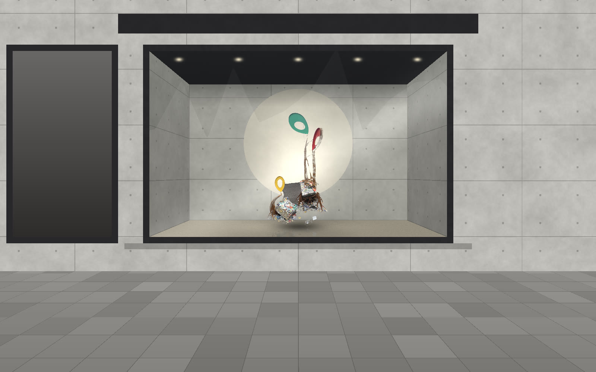
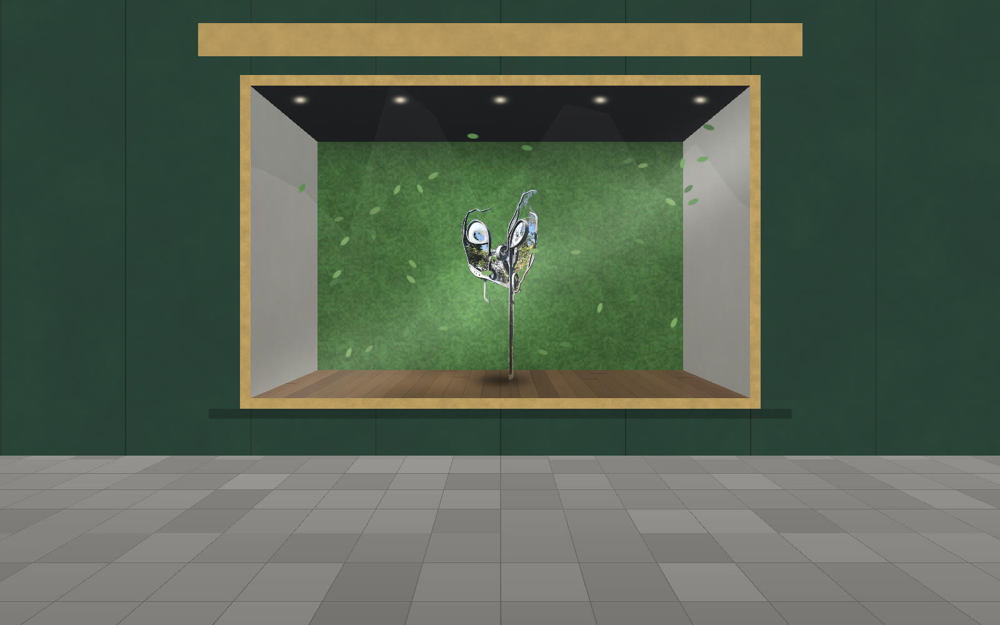
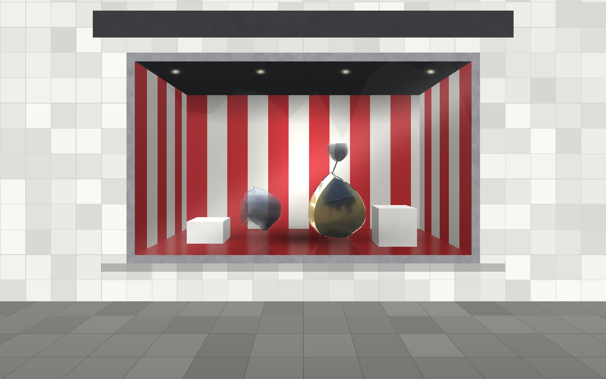

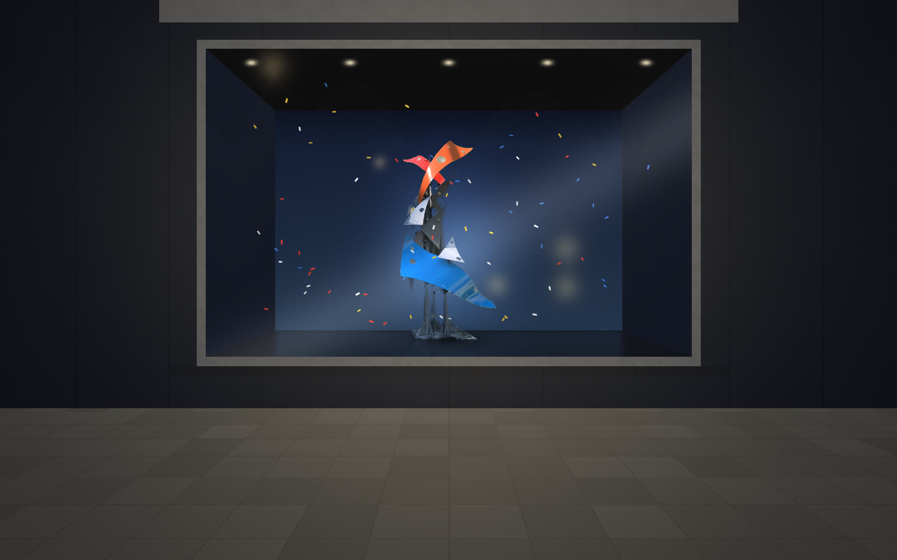
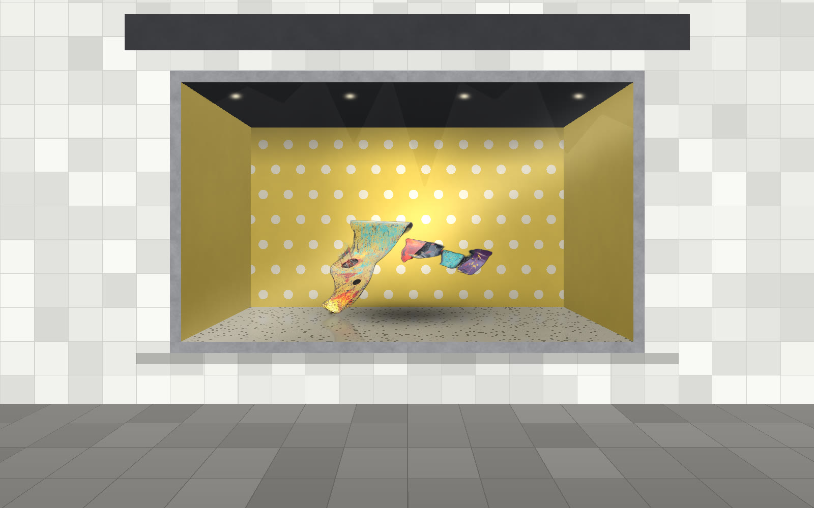
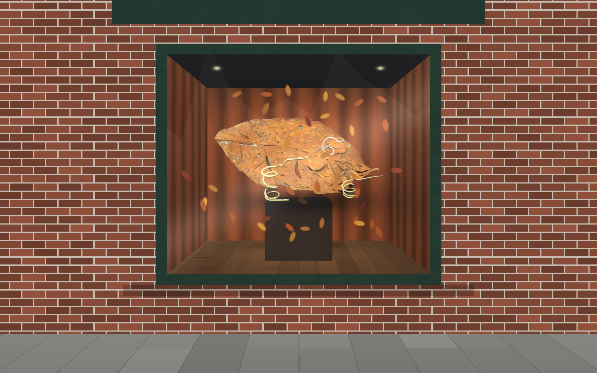
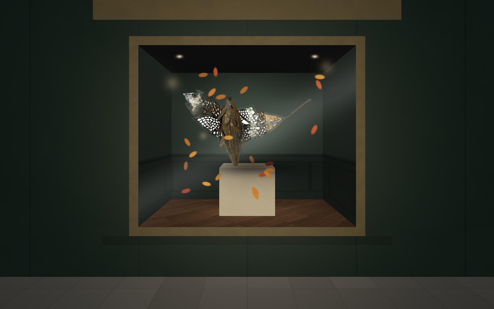
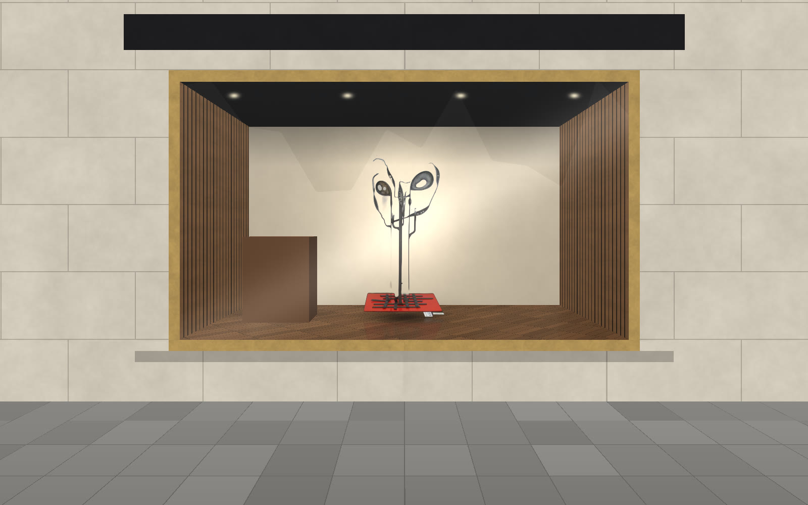
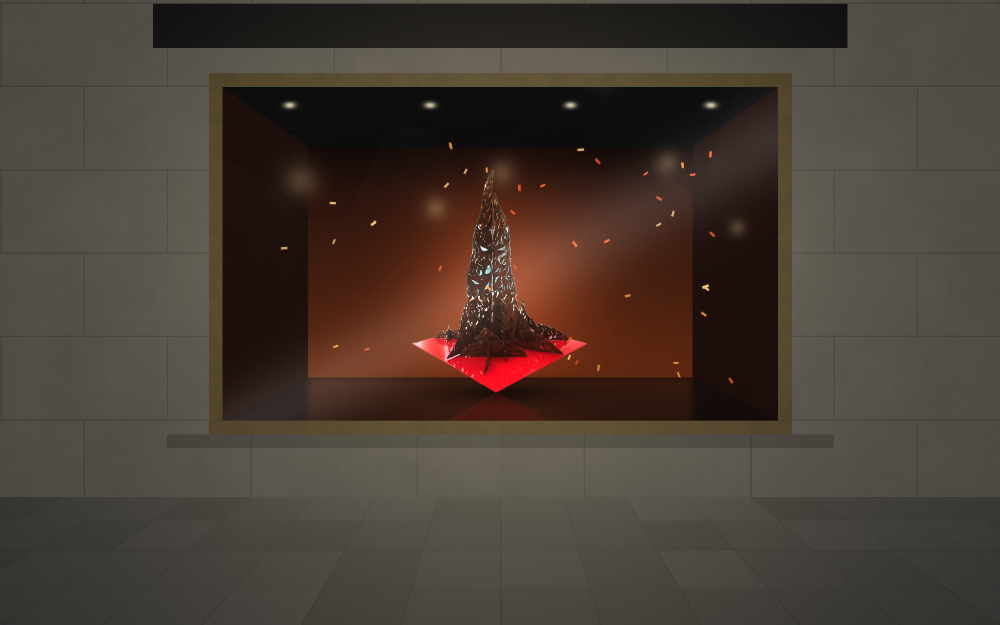

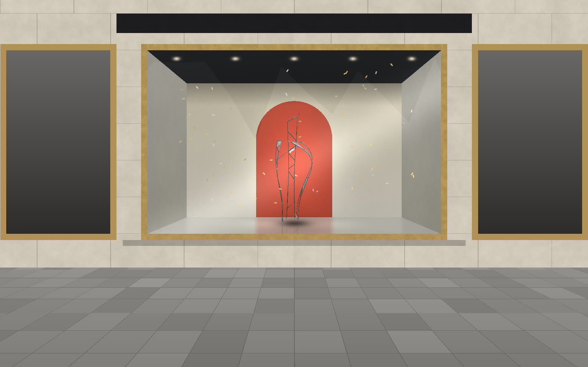

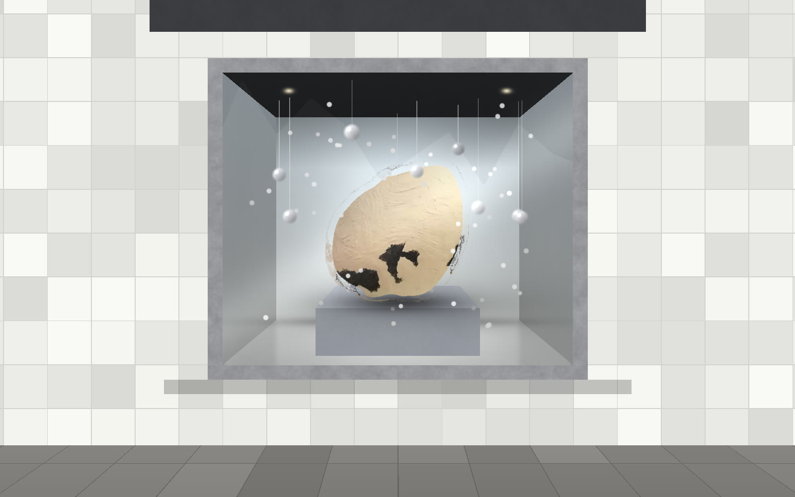
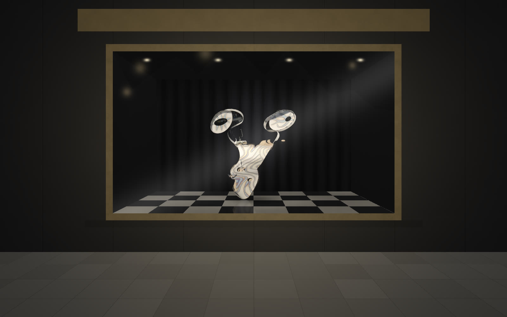
※ ウィンドウの画像は、作品の写真をもとに合成した参考イメージです（実在の店舗ではありません）。作品の大きさ・ウィンドウの寸法により、実際の見え方は変わります。
作品は主役にも、商品を引き立てる背景にもなります。ディスプレイ担当の方やディスプレイ会社と一緒に、置き方を考えます。
細い鉄の帯を編んだ球や、レースのように透かした羽。小さな輝きを、粗い鉄の質感がいっそう引き立てます。
革の艶と、錆びた鉄の深い茶色。秋冬のコレクションに、温かみと重みを加えます。
赤・黄・青に塗られた鉄の作品は、パッケージの色と響き合い、キャンペーンの色を通りに伝えます。
人の背丈を超える作品は、マネキンと並べても負けない存在感。ウィンドウ全体を一つの風景にします。
鉄の作品は重さがあるため、ウィンドウの寸法と床の強さを確かめてから作品を選びます。搬入・設置・撤去は、有限会社アイエル物産と作家が担当します。
ウィンドウの幅・奥行き・高さ、床の耐荷重、搬入口の大きさをうかがい、無理なく置ける作品をご提案します。
閉店後や定休日など、営業のじゃまにならない時間に搬入・設置・撤去をします。
台座や固定の方法を、ウィンドウの床や壁に合わせて考えます。お客様の通行がある場所でも安心して置けるようにします。
スポットライトの位置で、作品の影や表情が大きく変わります。照明を含めた見え方をご提案します。
季節の展示、キャンペーン期間、周年イベントなど、会期に合わせてご相談ください。
作品・期間・搬入の条件をうかがってお見積りします。
店舗名、ウィンドウの写真と寸法、展示のテーマ、会期をお知らせください。
季節・テーマ・商品に合う作品と、置き方をご提案します。
このページの画像のように、ウィンドウに飾った姿を事前にお見せします。
営業時間外に搬入し、照明を見ながら設置します。
位置の調整やお手入れのご相談に応じます。
会期が終われば撤去。次のシーズンの作品へ入れ替えもできます。
レンタル作品のほかに、ブランドやシーズンのテーマに合わせて新しい作品を企画・制作する「リクエストオーダー」も承ります。完成前に、ウィンドウに置いた姿をCGで確かめてから制作に入ります。
作品の大きさはさまざまです。台座にのせる小ぶりな作品もあります。ウィンドウの寸法をお知らせください。
作品の形や強さによってはできます。どのように見せたいか、事前にご相談ください。
はい。店内・エントランス・オフィスへのレンタルも承ります。オフィス・エントランス向けのご案内もご覧ください。
作品によってはご購入のご相談もできます。